This post is part of the C# Advent Calendar 2020. There is an equivalent post in F# here.
Note April 2024: The original code in this post is based on Rebus 6 and .Net 5. The code in GitHub has now been updated to Rebus 8 and .Net 8. Differences can be viewed in the here.
Introduction #
This post talks about how to build a system that runs a long-running business process (aka workflow or "saga") using a .Net library called Rebus.
Rebus is a library that makes it easy to build reliable, distributed systems. We will show how to host our Rebus system in Azure App Services. You will also be able to run it by pressing F5 in your IDE.
We will be implementing a set of fictional, but quite typical business requirements around the onboarding of a new customer.
So, let's get started!
Introducing Rebus #
Rebus is a distributed, asynchronous and durable .Net Service Bus that is a pleasure to use. I like to think of Rebus as microservices without the faff! It's a .Net library uses messages to communicate between parts of your application and can do that reliably by using one of the various options for transporting and sharing those messages. Rebus can be anywhere your application is (except on mobile and embedded devices afaik).
I've been using Rebus for a long time now. In my current gig, we are using Rebus in a national medicines optimisation healthcare system that serves around 50 million patients across the UK. Rebus has helped us simplify and centralise a lot of complex, legacy back end processing and allow us to move the system from on-prem to the cloud.
As a "message-based architecture", Rebus is similar to other .Net Service Buses such as NServiceBus, Mass Transit or EasyNetQ. Like these other service buses, Rebus uses a push model where it reacts to incoming messages. This is distinct to streaming approaches such as used by Kafka, etc.
Rebus is open source (MIT), completely free to use and has around 1.4K GitHub stars. It is Danish software and the founder and primary maintainer is Mogens Heller Grabe (@mookid8000). Mogens runs a company that provides consultancy, support and some rather excellent monitoring software for use with Rebus (more details here: https://rebus.fm/services/).
Thanks to Mogens for kindly reviewing the content of this post.
What good things does Rebus bring us? #
Rebus brings high levels of reliability to your system. Each message will either be processed or sent to an error queue so that you can fix the problem and replay it later.
Rebus naturally breaks your system down into small chunks of functionality called handlers that are easy to write, reason about and test. I find working with Rebus to be a very good developer experience (and the error messages are really useful too!).
One or more handlers can respond to and process messages, which makes it very easy to extend your system without changing existing code. Different handlers that process the same message do not need to be in the same application component. This makes it easy to architect your application in a manner that supports your performance, scaling and security needs.
Rebus can use various technologies to store messages that are being processed. These are called message transports and include RabbitMQ, Azure Service Bus, Amazon SQS and various databases. There are also transports that use the file system or in-memory. Rebus relies on the transport to provide durability and reliability, so you probably don't want to use the in-memory transport when you care about losing messages! If Rebus can't process a message then it can retry that processing either in using a simple approach, using a back-off strategy and you can also add a second layer of processing for a more comprehensive approach to handling failures.
Ultimately, if the message can't be processed for whatever reason, then Rebus will keep it for you in the part of the transport that you nominate as the error queue when you configure Rebus. As well as the message, Rebus also stores the details of the failures in the message's headers so that you can easily see what went wrong and fix it. When you've put the database server's plug back into the wall, or fixed the cause of the failure in some other way, you can move the message back to the processing queue so that processing can begin again!
There are plenty of other good things in Rebus that we don't have time to talk about here, such as
- Transporting larger data using the Data Bus.
- Controlling the number of workers and parallelism.
- Controlling how Rebus serialises messages.
- Compressing and encrypting the contents of messages
As you'd expect, there is superb support for testing too!
Check out the official wiki here:
https://github.com/rebus-org/Rebus/wiki
Overview of our scenario #
We are going to jump into Rebus a little beyond the basics of request/reply or pub/sub and look at how to model long-running, durable workflows (aka sagas) in Rebus. We are going to use Rebus to build an application that processes new customers for a hypothetical business and then host that in an Azure App Service. You could also run the same code as a Windows Service if you want, and it will run just the same in your IDE when you press F5 (or whatever you press to run your shizzle!).
We're going to add a few requirements into our made-up business scenario, just so that we can showcase some of Rebus' features. Let's take a look at the business requirements.
We're going to model a business process that is under an OLA and which has compensating actions that must be taken if the requirements in the OLA are not met.
The business wants us to build a system to handle the onboarding of new customers. As well as functional requirements, the business also have operational requirements so that they can meet their operational level agreements (OLA). When a new customer is taken on, the business wants the following to happen:
- An account is to be created for the customer.
- A welcome email is to be sent to the customer after the account is created.
- A sales call is scheduled in the CRM after the account has been created.
The business has an OLA in place that stipulates that new customers must be processed within a given time. So that they can meet their OLA requirements, they want our workflow to complete within 10 minutes of the customer being taken on. If the workflow does not complete within 10 minutes, the business wants the following to happen:
- Any placed sales call is to be cancelled.
- The service desk takes over the process.
Great - we know what they want. So, let's start building it!
Our architecture #
Our architecture is very simple. This is what it looks like:
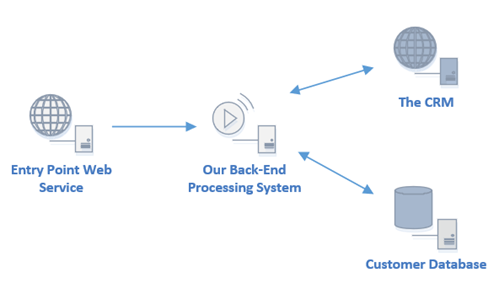
There is a web API that serves as an entry point to let us know about the new customer. There is a back end processing system that does all our processing. There is also a CRM and a customer database.
We are going to build the entry point API and the back end processing system. We are going to pretend that the CRM and the database exist.
Rebus will be used in the web API and the back end processing system.
Setting up the projects #
We're going to be using .Net 5, and I'll be using JetBrains Rider, but you can use your IDE of choice! We're going to build everything so that it runs on our local machines and then migrate it to the Cloud later. You can find the code in GitHub here:
https://github.com/seankearon/rebus-onboardingcs.git
So that you can skip ahead, there are branches that have the outcomes of the stages as mentioned below.
The basic setup is to create a project for our Web API and a Console App project for our back end processor. We'll call these EntryPointAPI and OnboardingProcessor respectively. We'll see later how to run this locally, in an Azure App Service or a Windows Service.
Then we add the Rebus and Rebus.ServiceProvider NuGet packages to each project, giving us something like this:
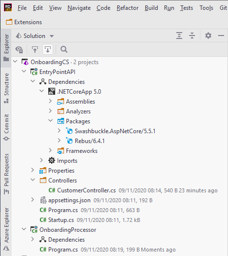
This stage is available on the branch 1-basic-project-setup.
Defining our messages #
So, now we have a couple of projects waiting for some code, we need to think about what we're going to build! In a message-based system, a good place to start is designing your messages.
In Rebus, you model your messages as POCOs. Messages will be used by different parts of our system, so we'll put them into a shared assembly. Messages should also be small and immutable. (Rebus does allow mutating a message but, as processing is asynchronous, it's not a good idea as it can lead to unpredictable behaviour. If you find you need to change the message state during processing then look at using another message to model the state changes.)
Events and commands #
Before we look at our requirements and start building our messages, let's take a moment to look at two types of messages.
Messages split into two broad categories: events and commands. These correspond to the general meaning of the words with an event being a general notification that something has occurred (i.e. in the past), and a command is a when you tell a component to do something.
To send a command in Rebus you use either IBus.Send() or IBus.SendLocal() to send the message to a specific queue. The difference between those calls is that with IBus.Send() you need to use Rebus' routing to tell Rebus where to send the message, but IBus.SendLocal() always sends the message to the current endpoint's queue.
Our first set of messages #
Let's leave the OLA requirements to one side for now and look at our main requirements. These say that when a customer is onboarded that:
- An account is to be created for the customer.
- A welcome email is to be sent to the customer after the account is created.
- A sales call is scheduled in the CRM after the account has been created.
So, if we were sitting in a room together and someone was telling us what to do, they'd probably say something like this:
"Create an account for Sean."
"Account created for Sean."
"Send a welcome email to Sean."
"Schedule a sales call with Sean."
"Welcome email sent to Sean"
"Sales call scheduled with to Sean"
Someone is listening and ticks off what has been done. If the process doesn't finish in time then they tell everyone to stop. Check if the sales call should be cancelled and tell the service desk to take over.
So, that looks like three commands and an event to me! As it's good for messages to be immutable, let's use C# 9's new records feature to implement our messages, which gives us:
public record OnboardNewCustomer
{
public string Name { get; init; }
public string Email { get; init; }
}
public record CreateCustomerAccount
{
public string Name { get; init; }
public string Email { get; init; }
}
public record CustomerAccountCreated
{
public string Email { get; init; }
public int CustomerId { get; init; }
}
public record SendWelcomeEmail
{
public int CustomerId { get; init; }
}
public record WelcomeEmailSent
{
public int CustomerId { get; init; }
}
public record ScheduleSalesCall
{
public int CustomerId { get; init; }
}
public record SalesCallScheduled
{
public int CustomerId { get; init; }
}Generally, you will want your messages to contain as little information as possible. After the customer has been created, we then use the ID of the customer. We use the CustomerAccountCreated message to let us know what ID the new customer has been assigned. We will see how that is used later.
This stage is available on the branch 2-main-messages-added
Creating the web API entry point #
The next job is to make our web API tell the backend about any new customers. We'll just add a simple route to allow posting of a name and email.
POST /newcustomer?name=my name&email=me@my.email
When we receive such a POST request then we will start the onboarding process by sending a CreateCustomerAccount message to the bus and respond with a 200 OK.
await _bus.Send(new OnboardNewCustomer { Name = name, Email = email });
return Ok();To do this, we need to set up Rebus in our web API. There are two basic modes of operation for Rebus "out of the box": normal and one-way client. The one-way client mode "does what it says on the tin" and allows you to send messages from a component. In normal mode, Rebus can send and receive messages. You can read more about those here.
We are going to set up Rebus inside our .Net 5 web API and inject an instance of the Rebus IBus into our controller. Remember, at this stage, we are just using the file system as our transport and will be adding Azure later. In time-honoured fashion, let's use an extension method to configure and register an IBus instance and then inject that into our controller.
In Startup.cs we will add one call to our configure services method:
public void ConfigureServices(IServiceCollection services)
{
services.AddControllers();
...
// This configures and registers Rebus.
services.AddRebusAsOneWayClient();
}In our controller, we add a constructor parameter for the IBus so that it will be injected into the instance. Our controller method can then send the message to the bus, making our controller class look like this:
[ApiController]
public class CustomerController : ControllerBase
{
private readonly IBus _bus;
public CustomerController(IBus bus)
{
_bus = bus;
}
[HttpPost]
[Route("newcustomer")]
public async Task<IActionResult> NewCustomer(string name, string email)
{
await _bus.Send(new OnboardNewCustomer { Name = name, Email = email });
return Ok();
}
}Pretty simple, right? All that remains now is to look at the configuration in our extension method. This looks like:
public static void AddRebusAsOneWayClient(this IServiceCollection services)
{
services.AddRebus(
cfg => cfg
.Logging (l => l.Console()) // A
.Routing (r => r.TypeBased().Map<OnboardNewCustomer>("MainQueue")) // B
.Transport (t => t.UseFileSystemAsOneWayClient("c:/rebus-advent")) // C
.Options (t => t.SimpleRetryStrategy(errorQueueAddress: "ErrorQueue"))); // D
}So, in our configuration we do the following:
A: We tell Rebus to log to the console.
B: We tell Rebus where to send the OnboardNewCustomer messages. In Rebus, messages go to "queues".
C: we tell Rebus to use the file system to transport messages, and we tell Rebus that we will only ever be sending messages.
D: we tell Rebus to retry any failures (the default is 5 times, but you can set that as you wish) and to send messages that are still failing log to the queue called "ErrorQueue".
This configuration will change a little later when we use Azure ServiceBus as our message transport. But, we're now ready to start sending messages. Woohoo!
The code at this point is available in the branch 3-entry-point-api-working. Go and run that, crank up your favourite HTTP tool and send the following to your new API (don't forget to add the host!):
POST /newcustomer?name=Sean&email=sean@my.email
Aside: If you're using Rider, you can run the line above from Rider's built-in HTTP client. How cool is that? :)
Then you will see a file has appeared in c:/rebus-advent/MainQueue. We can just open that up to see that a message in Rebus consists of a set of headers and a body:
{
"Headers": {
"rbs2-intent": "p2p",
"rbs2-msg-id": "323e07bb-4dd2-43b4-af5d-9c5749742cd7",
"rbs2-senttime": "2020-11-10T11:17:26.1492853+00:00",
"rbs2-msg-type": "OnboardingMessages.OnboardNewCustomer, OnboardingMessages",
"rbs2-corr-id": "323e07bb-4dd2-43b4-af5d-9c5749742cd7",
"rbs2-corr-seq": "0",
"rbs2-content-type": "application/json;charset=utf-8"
},
"Body": "eyIkdHlwZSI6Ik9uYm9hcmRpbmdNZXNzYWdlcy5PbmJvYXJkTmV3Q3VzdG9tZXIsIE9uYm9hcmRpbmdNZXNzYWdlcyIsIk5hbWUiOiJTZWFuIiwiRW1haWwiOiJzZWFuQG15LmVtYWlsIn0="
}The body is Base64 encoded JSON that is our serialised message:
{
"$type": "OnboardingMessages.OnboardNewCustomer, OnboardingMessages",
"Name": "Sean",
"Email": "sean@my.email"
}A quick review #
So, to add Rebus to our normal .Net Web API project we have:
- Defined our messages.
- Added around 4 lines of configuration.
- Registered Rebus into .Net 5's DI.
- Sent the message into our bus directly from our controller method.
Because of the reliability and durability that Rebus' brings, any client that calls our /newcustomer API and receives a 200 OK knows that the onboarding process has now started and that it will be processed as expected.
That's a good start! Let's move on to creating the back end of our system that is going to process the messages from the API.
Creating the back end #
The way we set up Rebus in the back end is going to be very similar to how we did that in the API. There are some essential differences that we will focus on:
- The back end needs to send and receive messages.
- The back end will be performing a long-running, durable workflow/saga.
- We want to be able to host the back end in an Azure App Service, as well as run it locally (and, possibly, in a Windows Service).
Configuring Rebus for send and receive #
Next, we are going to configure Rebus for our back end. So that we can run locally or in an Azure App Service, we are going to use a library called Topper form the creator of rebus, Mogens (here's Mogens' blog introducing Topper.. Under the hood, Topper uses the venerable Topshelf library and requires us to implement our back end as an IDisposable wrapper and run it inside a Console application project.
I'm going to sprinkle in a little bit of Serilog too, just for fun. Our entry point will look like the following:
static class Program
{
static void Main()
{
Log.Logger = new LoggerConfiguration()
.WriteTo.Console()
.CreateLogger();
var configuration = new ServiceConfiguration()
.Add("OurBackendBus", () => new Backend());
ServiceHost.Run(configuration);
}
}That all we need to do to set up for running locally or in Azure. We can also create and run it as a Windows Service just by calling the executable using the parameter install (use uninstall to remove the service). Very cool!
The rest of the magic all happens in our Backend class. Let's take a look at that class:
public class Backend : IDisposable
{
private readonly ServiceProvider _provider;
private IBus _bus;
public Backend()
{
var services = new ServiceCollection();
services.AddRebusAsSendAndReceive();
_provider = services.BuildServiceProvider();
_provider.UseRebus(x => _bus = x);
}
public void Dispose()
{
_bus?.Dispose();
_provider?.Dispose();
}
}And, like previously, we've put the configuration spell into an extension method, which looks like this:
public static void AddRebusAsSendAndReceive(this IServiceCollection services)
{
services.AddRebus(
cfg => cfg
.Logging(l => l.Serilog())
.Routing(r => r.TypeBased().MapAssemblyOf<OnboardNewCustomer>("MainQueue"))
.Transport(t => t.UseFileSystem("c:/rebus-advent", "MainQueue"))
.Options(t => t.SimpleRetryStrategy(errorQueueAddress: "ErrorQueue"))
.Sagas(s => s.UseFilesystem("c:/rebus-advent/sagas"))
);
services.AutoRegisterHandlersFromAssemblyOf<Backend>();
}
This is very similar to the previous one, but we are not using the *AsOneWayClient flavours of the configuration methods. We are going to be dealing with more than one message in our back end, so the routing maps all messages from the assembly to our MainQueue. The file system transport is two-way and therefore needs to know which queue to work against - that's MainQueue again. Lastly, we've got a new configuration item to set us up ready for our sagas later on.
There is one new line that we haven't seen before now: services.AutoRegisterHandlersFromAssemblyOf<Backend>();. This tells Rebus to scan the assembly to find and register handlers, which in Rebus are types that will process messages. You can now test that the lovely new backend is working by adding a handler for the OnboardNewCustomer message, as follows:
public class DummyHandler : IHandleMessages<OnboardNewCustomer>
{
public Task Handle(OnboardNewCustomer message) => throw new NotImplementedException();
}If you have a message waiting in the queue from before, then this will be found and Rebus will pass it to the handler above and can break in your IDE to see that the data from our earlier message is passed into our handler. If you don't have a message waiting, just use the API to send one.
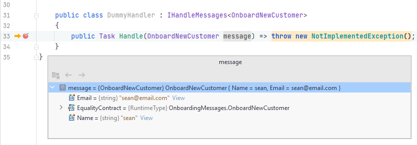
You can also see the logging output in the console:
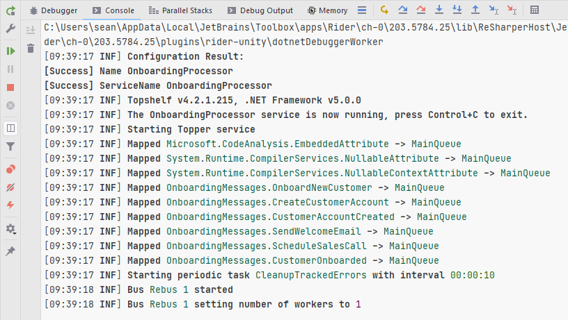
If you allow the program to run, you'll see in the console that Rebus will retry the message 5 times - getting our NotImplementedException each time, and then the message is moved to our ErrorQueue:
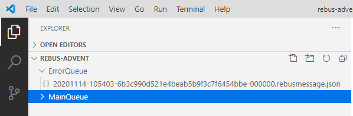
Just drag it back to the MainQueue to start processing again!
You can find the code at this point on the branch 4-back-end-configuration.
Aside: Did you see what happened there? Our system didn't stop working just because the back end component was down (okay, not even written yet!!). The message stayed in the queue and waited until there was something to process it. That's a nice example of how using Rebus increases the reliability of your system.
Creating the saga #
Okay, we're ready now to create our saga, the code that will run our workflow. Rebus models sagas by implementing two connected classes. One that holds any state that changes throughout the workflow, and one that is responsible for coordinating the work done throughout the long-running process. This is what the basic structures look like:
public class OnboardingSagaData: ISagaData
{
public Guid Id { get; set; }
public int Revision { get; set; }
}
public class OnboardingSaga : Saga<OnboardingSagaData>, IAmInitiatedBy<OnboardNewCustomer>
{
protected override void CorrelateMessages(ICorrelationConfig<OnboardingSagaData> config) { ... }
public Task Handle(OnboardNewCustomer message) { ... }
}
The OnboardingSagaData class has the Id and Revision properties from the ISagaData interface so that Rebus can control concurrent access to the saga's state for us.
Each time a customer is onboarded, there will be a saga instance that is responsible for controlling the onboarding workflow for that customer. The CorrelateMessages method in the OnboardingSaga class is used by Rebus to find the saga instance that relates to a particular message.
We tell Rebus when to start a new saga by adding the interface IAmInitiatedBy<OnboardNewCustomer>. Soon, we will add other messages that will be processed by the saga by using the IHandleMessages<T> interface.
Let's push on and see how this is implemented for the full workflow (except the OLA requirements).
We need to track what's going on in our workflow. We do that by adding state to the ISagaData implementation. We're going to keep hold of the name, email and the new account id and we also want to track what actions have happened. I've added the IsComplete helper property that we'll use in the saga.
public class OnboardingSagaData: ISagaData
{
public Guid Id { get; set; }
public int Revision { get; set; }
public string CustomerName { get; set; }
public string CustomerEmail { get; set; }
public int AccountId { get; set; }
public bool AccountCreated { get; set; }
public bool WelcomeEmailSent { get; set; }
public bool SalesCallScheduled { get; set; }
public bool IsComplete => AccountCreated && WelcomeEmailSent && SalesCallScheduled;
}We update the state from inside the handlers in our saga (Rebus makes the saga's data available via the instance's Data property). For example, when we get a confirmation that the welcome email has been sent:
public Task Handle(WelcomeEmailSent m)
{
Data.WelcomeEmailSent = true;
TryComplete();
return Task.CompetedTask;
}At the exit of each handler method, we call TryComplete(). This method checks to see that we've done everything we want to do and, if so, we call the Rebus' MarkAsComplete() method. Rebus will then remove clean up and remove the saga's state for us. We call this every time as Rebus, being distributed and asynchronous, may have finished up the saga in the blink of an eye! (Okay, we probably don't need to call it at the end of the initiating method, but I like to do that for consistency!) This is our TryComplete() method:
private void TryComplete()
{
if (Data.IsComplete)
{
MarkAsComplete();
}
}Rebus needs to know how to find the saga state for our particular workflow, and we have updated the CorrelateMessages method with the necessary code to let Rebus do just that:
protected override void CorrelateMessages(ICorrelationConfig<OnboardingSagaData> config)
{
config.Correlate<OnboardNewCustomer> (x => x.Email, nameof(OnboardingSagaData.CustomerEmail));
config.Correlate<CustomerAccountCreated>(x => x.Email, nameof(OnboardingSagaData.CustomerEmail));
config.Correlate<WelcomeEmailSent> (x => x.AccountId, nameof(OnboardingSagaData.AccountId));
config.Correlate<SalesCallScheduled> (x => x.AccountId, nameof(OnboardingSagaData.AccountId));
}
The configuration allows you to correlate a property value in each message handled by the saga with a value in the saga's state. You just need to make sure Rebus can uniquely identify the saga from these values and then sit back and let Rebus do all the finding for you! We're using the email and the account ID when it's known. Note that you need to supply a correlation for Rebus to identify all messages to which the saga responds, including the message that initiates the saga.
All that remains is to do some work inside the saga. Generally, I like to keep my sagas pretty "slim" and make them responsible for coordinating the flow of work. I tend to pass off work to other handlers by sending messages out from the saga. Here's how that looks in the saga's initiating handler:
public async Task Handle(OnboardNewCustomer m)
{
if (!IsNew) return;
Data.CustomerName = m.Name;
Data.CustomerEmail = m.Email;
await _bus.Send(new CreateCustomerAccount {Name = m.Name, Email = m.Email});
TryComplete();
}In the first line we check that the saga hasn't already been created by another process and abandon if so. Then, after setting some state, we use the Rebus IBus instance has been injected into our saga to send a command message to create an account for the customer details we have been given.
await _bus.Send(new CreateCustomerAccount {Name = m.Name, Email = m.Email});As our requirements say that everything else should happen after the account has been created, that's all we need to do there.
The full code looks like this:
public class OnboardingSaga : Saga<OnboardingSagaData>
, IAmInitiatedBy<OnboardNewCustomer>
, IHandleMessages<CustomerAccountCreated>
, IHandleMessages<WelcomeEmailSent>
, IHandleMessages<SalesCallScheduled>
{
private readonly IBus _bus;
public OnboardingSaga(IBus bus)
{
_bus = bus;
}
private void TryComplete()
{
if (Data.IsComplete)
{
MarkAsComplete();
}
}
protected override void CorrelateMessages(ICorrelationConfig<OnboardingSagaData> config)
{
config.Correlate<OnboardNewCustomer> (x => x.Email, nameof(OnboardingSagaData.CustomerEmail));
config.Correlate<CustomerAccountCreated>(x => x.Email, nameof(OnboardingSagaData.CustomerEmail));
config.Correlate<WelcomeEmailSent> (x => x.AccountId, nameof(OnboardingSagaData.AccountId));
config.Correlate<SalesCallScheduled> (x => x.AccountId, nameof(OnboardingSagaData.AccountId));
}
public async Task Handle(OnboardNewCustomer m)
{
if (!IsNew) return;
Data.CustomerName = m.Name;
Data.CustomerEmail = m.Email;
await _bus.Send(new CreateCustomerAccount {Name = m.Name, Email = m.Email});
TryComplete();
}
public async Task Handle(CustomerAccountCreated m)
{
Data.AccountId = m.AccountId;
Data.AccountCreated = true;
await _bus.Send(new SendWelcomeEmail {AccountId = Data.AccountId});
await _bus.Send(new ScheduleSalesCall {AccountId = Data.AccountId});
TryComplete();
}
public Task Handle(WelcomeEmailSent _)
{
Data.WelcomeEmailSent = true;
TryComplete();
return Task.CompletedTask;
}
public Task Handle(SalesCallScheduled _)
{
Data.SalesCallScheduled = true;
TryComplete();
return Task.CompletedTask;
}
}The code at this stage is available in the branch 5-saga-receives-messages.
If you check that out, run it and start the saga by posting to our API, then the message will fail and be placed in the error queue after be retried only once. If you open up the message, you'll see something like this:
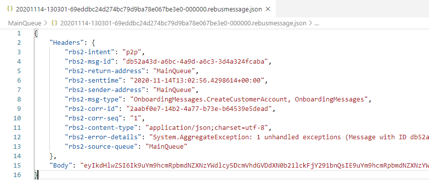
Look inside the rbs2-error-details header and you will see that Rebus has stored the exception details in there for use. They tell us this:
Message with ID db52a43d-a6bc-4a9d-a6c3-3d4a324fcaba
and type OnboardingMessages.CreateCustomerAccount, OnboardingMessages
could not be dispatched to any handlers
(and will not be retried under the default fail-fast settings)
This lovely, helpful error shows what Rebus puts messages onto the error queue if it cannot find any handlers to process it. The "fail-fast" part is Rebus' built-in mechanism to skip retries when you are sure there is no point.
Creating the remaining handlers #
In a real-world application, you might choose to create another Rebus endpoint for one or more of the handlers we are going to create. This could be because you want to deploy it separately for performance or other reasons. Rebus makes it easy to structure your application how you want. For us, we're going to put them all into the single endpoint - that's fine too! :)
We need handlers that do the following:
- Create a customer account.
- Send a welcome email.
- Schedule a sales call.
As we saw briefly above with our DummyHandler, a handler is just a class that implements the IHandleMessages<T> interface. So, we need the following handlers:
public class CreateCustomerAccountHandler : IHandleMessages<CreateCustomerAccount>
{
private readonly IBus _bus;
public CreateCustomerAccountHandler(IBus bus)
{
_bus = bus;
}
public async Task Handle(CreateCustomerAccount m)
{
await Task.Delay(500); // Pretend we're doing something!
await _bus.Reply(new CustomerAccountCreated {Email = m.Email, AccountId = new Random().Next()});
}
}
public class SendWelcomeEmailHandler : IHandleMessages<SendWelcomeEmail>
{
private readonly IBus _bus;
public SendWelcomeEmailHandler(IBus bus)
{
_bus = bus;
}
public async Task Handle(SendWelcomeEmail m)
{
await Task.Delay(500); // Pretend we're doing something!
await _bus.Reply(new WelcomeEmailSent { AccountId = m.AccountId });
}
}
public class ScheduleSalesCallHandler : IHandleMessages<ScheduleSalesCall>
{
private readonly IBus _bus;
public ScheduleSalesCallHandler(IBus bus)
{
_bus = bus;
}
public async Task Handle(ScheduleSalesCall m)
{
await Task.Delay(500); // Pretend we're doing something!
await _bus.Reply(new SalesCallScheduled { AccountId = m.AccountId });
}
}The fact that we included the line services.AutoRegisterHandlersFromAssemblyOf<Backend>() in our Rebus setup means that we can put those handlers anywhere in our back end project. Rebus will find them and set them up so that they are ready to use.
You will notice that each handler notifies the saga that it was completed, sometimes passing back new information - such as the account ID. It's perfectly possible to use the IBus.Send*() methods to do that. But, I'm using IBus.Reply() which replies to the Rebus endpoint/queue that the message came from. That is a nice way to avoid having to think about whether I've configured the routing for that message!
One of the joys of developing against the file system transport is that you can easily look into what Rebus is doing. Just put a breakpoint in one of your handlers, use the API to start the onboarding process and you'll see the messages and saga state being updated on disk as you step through.
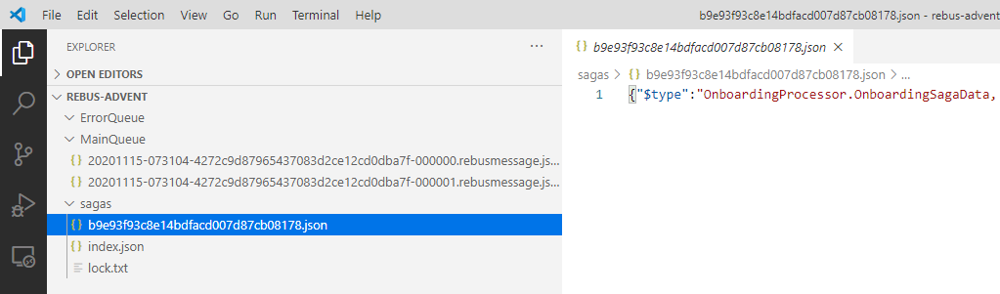
Congratulations! If you've followed this far, you now have a long-running, durable workflow implemented in Rebus!
You can get this code at this point from the branch 6-saga-processes-messages. I've added some logging to that so that you can watch things happening from the console too, so you should see something like this:
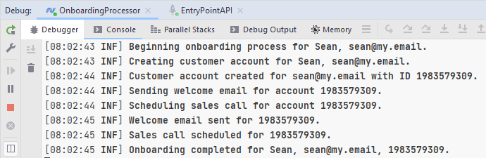
Aside: There are two versions of this post - one using C# and one using F#. Just for fun, why not try running the API from the C# project and the backend from the F# project? As long as you're using the same transport (at this stage that's file-system in c:\rebus-advent) then everything will work just fine. How lovely is that? :)
Adding OLA support #
Okay, so that's most of our requirements covered. We only have the OLA to add in. The requirement was that if the workflow does not complete within 10 minutes, the business want the following to happen:
- Any placed sales call is to be cancelled.
- The service desk takes over the process.
To implement this, we're going to use a cool Rebus feature: deferred messages (which are talked about in the timeout manager section of the Rebus wiki). Using this feature we can send ourselves a message that will be received at a time in the future. If that message is received before the saga completes then we know that our time is up! We send it like this:
await _bus.Defer(TimeSpan.FromSeconds(5), new OnboardingOlaBreached {SagaId = Data.Id});When we get that, we just handle it like any other message. Here's the handler to meet our OLA breach requirements:
public async Task Handle(OnboardingOlaBreached m)
{
if (Data.SalesCallScheduled)
{
await _bus.Send(new CancelSalesCall {AccountId = Data.AccountId});
}
await _bus.Send(new NotifyServiceDesk {Message = $"Customer onboarding OLA breach pending for new customer {Data.CustomerName} with email {Data.CustomerEmail}."});
MarkAsComplete();
}We send a message to cancel the sales call and then send another message to notify the service desk that bad things are about to happen! After that, we call MarkAsComplete() to close the saga.
Don't forget that we need to set up a correlation for our timeout message and add the interface to the saga's signature:
protected override void CorrelateMessages(ICorrelationConfig<OnboardingSagaData> config)
{
// snip
config.Correlate<OnboardingOlaBreached> (x => x.SagaId, nameof(OnboardingSagaData.Id));
}public class OnboardingSaga : Saga<OnboardingSagaData>
, IAmInitiatedBy<OnboardNewCustomer>
, IHandleMessages<CustomerAccountCreated>
, IHandleMessages<WelcomeEmailSent>
, IHandleMessages<SalesCallScheduled>
, IHandleMessages<OnboardingOlaBreached>We need to add a couple of handlers that will respond to our new fire-and-forget messages. As these are not responding, they are simpler creatures:
public class CancelSalesCallHandler : IHandleMessages<CancelSalesCall>
{
public Task Handle(CancelSalesCall m)
{
Log.Information($"Cancelling sales call for account {m.AccountId}.");
return Task.CompletedTask;
}
}
public class NotifyServiceDeskHandler : IHandleMessages<NotifyServiceDesk>
{
public Task Handle(NotifyServiceDesk m)
{
Log.Information($"Notifying the service desk that: {m.Message}.");
return Task.CompletedTask;
}
}Lastly, we need to update the configuration spell to tell Rebus where to store timeouts. We're going to store those in the file system for now:
public static void AddRebusAsSendAndReceive(this IServiceCollection services)
{
services.AddRebus(
cfg => cfg
// snip
.Timeouts(t => t.UseFileSystem("c:/rebus-advent/timeouts"))
);That's all we need to meet the remaining requirements around the OLA and compensating actions. In the code, we hard wired a 5-second timeout, so we can easily see the timeout in action by increasing the pretend delay in one of our handlers.
public class SendWelcomeEmailHandler : IHandleMessages<SendWelcomeEmail>
{
public async Task Handle(SendWelcomeEmail m)
{
await Task.Delay(10000); // This delay will breach our OLA rules!
await _bus.Reply(new WelcomeEmailSent { AccountId = m.AccountId });
}
}Now, when we run the saga we will see the delay causing the OLA to become breached and the compensating actions taking over.
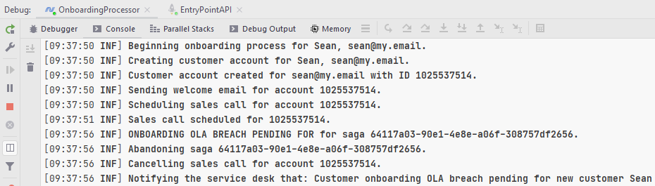
The code at this point is in the branch 7-ola-and-compensating-actions.
Migrating to the Cloud #
What we have at this point will run in the IDE and can easily be installed as a Windows Service, as mentioned earlier. All that remains now is to show how easy it is to migrate this to the cloud and run it in an Azure App Service.
As we do this, you'll notice that all we change is the configuration and the functionality remains the same. That's pretty awesome! (Okay, sure, I've added some code to get the .Net IConfiguration, but that doesn't count. :) )
We have two App Services that will host our entry point API and the back end processing system. Instead of the file system, we will be using Azure Service Bus for our message transport and a SQL Azure database to store our saga state.
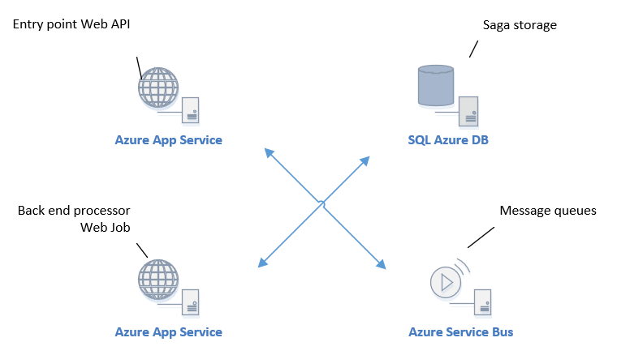
As you know, we're using Topper so that we can easily run our Rebus back end in the Azure App Service as continuous Web Job. This means we need to have the App Service configured as always on. We need to create a database for Rebus to use, but we're Rebus will create the tables if they don't already exist. The same is true for the queues in our Azure Service Bus. We need to change our configuration spells a little so that we can use these Azure resources.
Aside: In my production systems, I like to control the configuration based on a value in appsettings.json. That means I always have my local file system transport set up and ready for any debugging I might want to do locally.
We need to add the Rebus.AzureServiceBus NuGet to our API and back end projects, and the Rebus.SqlServer to our back end project. I'm using a basic SQL Azure database that costs £3.72 per month. That should be adequate until start onboarding a lot of customers!
Aside: To avoid making our connections strings visible in our code, we're going to use .Net 5's built-in secret management. You could also just store those in your appsettings.json while testing the code and not check them in!
You can access your Azure Service Bus connection string from the Shared access policies in the portal:
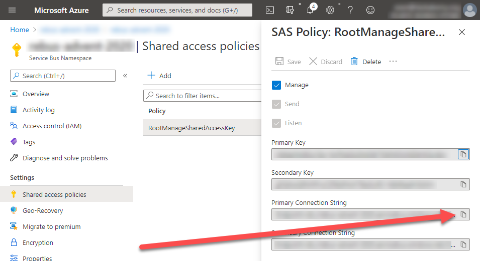
Tip: you can set your user secrets from the command line in the project folder: dotnet user-secrets set "ConnectionStrings:MsSqlConnectionString" "you connection string".
Here is the adjusted configuration spell for the back end:
public static void AddRebusAsSendAndReceive(this IServiceCollection services, IConfiguration config)
{
services.AddRebus(
rebus => rebus
.Logging (l => l.Serilog())
.Routing (r => r.TypeBased().MapAssemblyOf<OnboardNewCustomer>("MainQueue"))
.Transport(t => t.UseAzureServiceBus(config.GetConnectionString("AzureServiceBusConnectionString"), "MainQueue").AutomaticallyRenewPeekLock())
.Options (t => t.SimpleRetryStrategy(errorQueueAddress: "ErrorQueue"))
.Options (t => t.EnableMessageAuditing(auditQueue: "AuditQueue"))
.Sagas (s => s.StoreInSqlServer(config["MsSqlConnectionString"], "Sagas", "SagaIndexes"))
);
services.AutoRegisterHandlersFromAssemblyOf<Backend>();
}You can see that the .Transport has changed to use Azure Service Bus (and that we allow Rebus to automatically renew peek locks on our behalf) and that the .Sagas configuration now uses SQL Server. If you're paying attention, you might have noticed that there is no longer an item to configure timeout storage. That is because Rebus is using native behaviour in Azure Service Bus to achieve that (as it does with subscription storage, which is beyond the scope of this article). Nice!
Just so we can see what's happened, we've turned on message auditing using .EnableMessageAuditing(...). Rebus will now put a copy of every processed message into the queue we nominate.
The configuration spell for the API is adjusted similarly:
public static void AddRebusAsOneWayClient(this IServiceCollection services, IConfiguration config)
{
services.AddRebus(
rebus => rebus
.Logging(l => l.Console())
.Routing(r => r.TypeBased().Map<OnboardNewCustomer>("MainQueue"))
.Transport(t => t.UseAzureServiceBusAsOneWayClient(config.GetConnectionString("AzureServiceBusConnectionString")))
.Options(t => t.SimpleRetryStrategy(errorQueueAddress: "ErrorQueue")));
}Note: Make sure that you update the Microsoft.Azure.ServiceBus NuGet package to 5.0.0 or above or you might see an error like this when sending messages from the API:
Rebus.Exceptions.RebusApplicationException: Could not send to queue 'MainQueue' ---> System.InvalidOperationException: Operation is not valid due to the current state of the object.
So, we can now run locally just the same as we before, but our messages will be stored in Azure Service Bus and sagas in SQL Azure (don't forget to allow access to SQL Azure from your local IP address!). Run just the API and post to our /newcustomer route and you will see there is a message in Azure Service Bus:
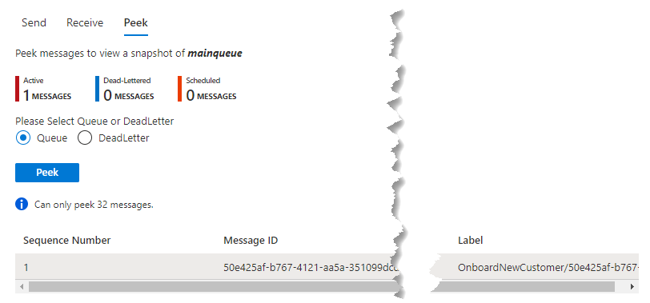
Run the back end project and you will see in the console that Rebus has created tables and queues for us before processing the waiting message:
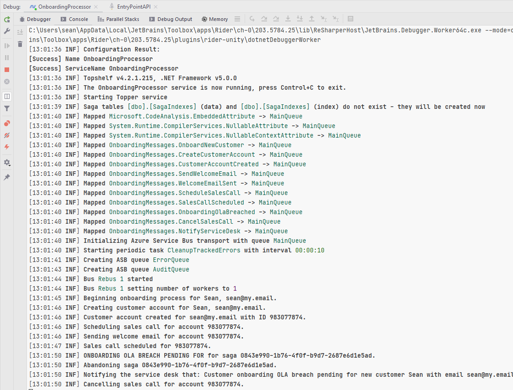
We now just need to publish our two projects and we'll have our onboarding process running in Azure. Before you do that, you will need to set up your connection strings in your App Service:
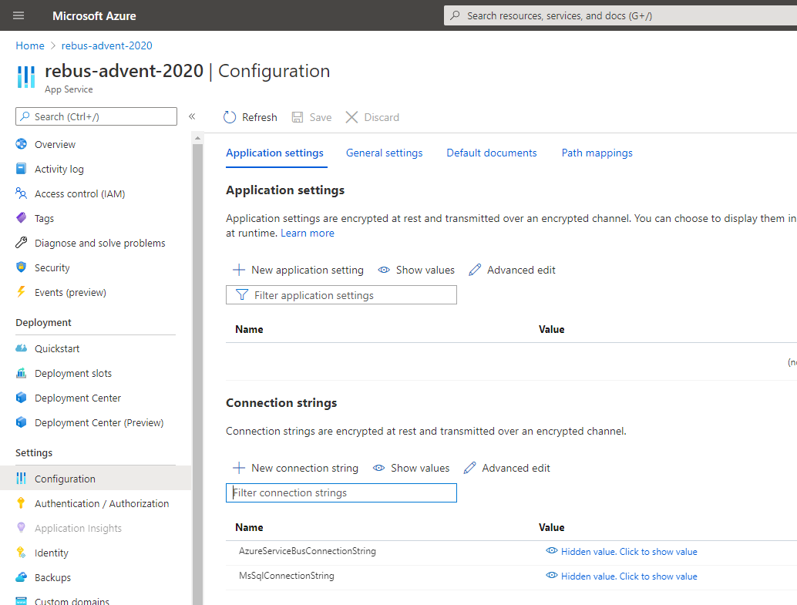
To publish our backend processor as a Web Job we'll use Visual Studio (as Rider's Azure integration doesn't include Web Job support - but, hey, who knows what we might get for Xmas! :) ). The process is pretty simple and you can create your App Services along the way if you want:
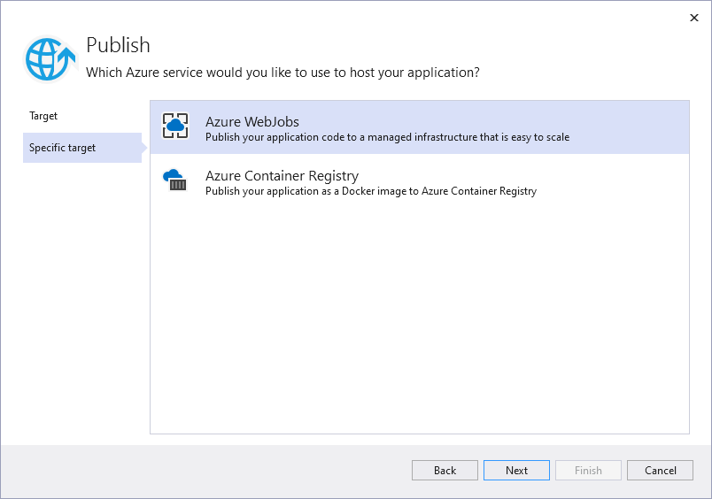
Tip: Make sure you set your Web Job to be continuous when you publish:
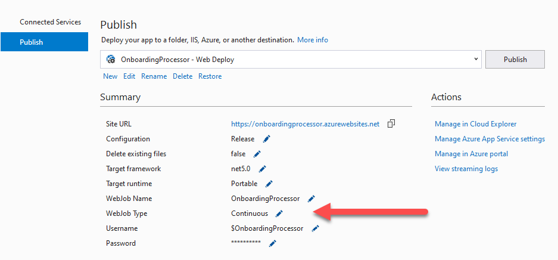
After you've published, check that your back end is working by looking in the Web Job section:
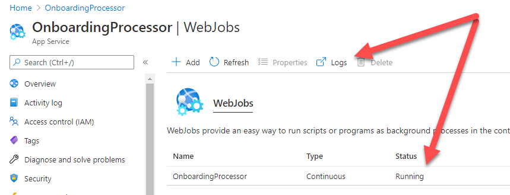
If it's not running, click on logs to the output and diagnose. Once it is running then you should be able to post to the /newcustomer API and see the same output we saw in our console in the Web Job logs:
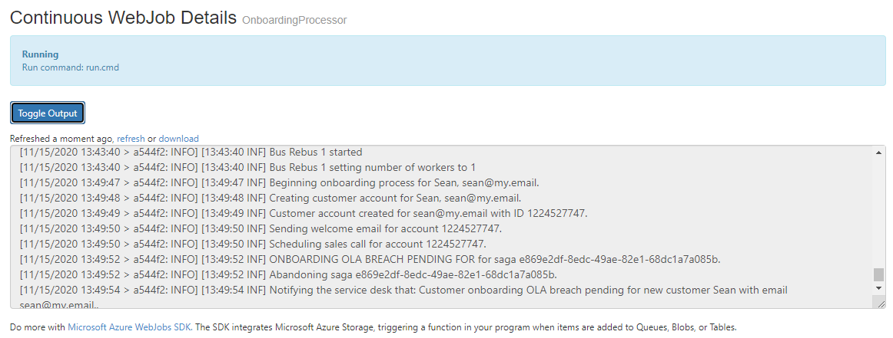
Congratulations - you now have your onboarding business process running in an Azure App Service Web Job and your API entry point running in Azure App Service.
The code at this point is in the branch 8-running-in-azure.
Enjoy Rebus!